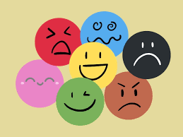
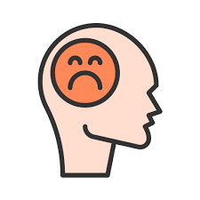

Portada

Plantel: Cetis 54
Integrantes:
Alexis Moisés Bautista Gudiño
Vega García Leonardo
Castellanos Amaro Damian Aldair
Martínez Galindo Nelly Guadalupe
Docente: Ana Belem Moreno
Tema: Las emociones y la vida saludable
Fecha: 3 de diciembre de 2025

1. ¿Qué son las emociones?
Las emociones cumplen funciones importantes: supervivencia, decisiones, motivación y relaciones sociales.
| Tipo | Ejemplos | Función |
|---|
| Básicas | Alegría, tristeza | Supervivencia |
| Secundarias | Culpa, vergüenza | Conducta social |
3. Emoción: Enojo
Es una emoción básica ante situaciones injustas o molestas.
| Manifestación | Descripción |
|---|
| Irritación | Molestia leve |
| Rabia | Emoción intensa |
4. Emoción: Culpa
Surge al reconocer un error o daño causado.
5. Emoción: Melancolía
Tristeza profunda acompañada de nostalgia.

6. Emoción: Frustración
Aparece cuando no se logra un objetivo o hay obstáculos constantes.
7. Manejo emocional
- Respiración profunda
- Escritura emocional
- Actividad física
- Comunicación asertiva
15. Referencias
- Wikipedia: Emociones
- OMS: Salud emocional
Conclusión
Las emociones son parte esencial de la vida humana y ayudan a comprender nuestras necesidades.